Ricavare dalle tavole PDF del Piano le geometrie (punti, linee, poligoni) degli interventi, con il codice intervento (Cod_Int_Amm, formato NN-NN_NNN) come attributo per il join con l’elenco interventi (DCC 553/2026, 548 righe), e georeferenziarle. Fonte: Demo Palermo, 24 PDF (tavole 1:5.000 Tav_NN = tavola 50NN, e quadro d’unione 1:10.000), scaricati con Playwright perché curl riceveva 403 dalla protezione anti-bot.
Non sono vettoriali né georeferenziati: ogni pagina è una griglia di tessere raster 2048×2048 px a 300 dpi (1 px = 0,4233 m a 1:5.000, 0,847 m a 1:10.000). La pagina è ritagliata ma le 72 tessere coprono tutto il comune, quindi si lavora sulle tessere originali (pdfimages, posizioni da mutool trace), non su un rendering.
Colori piatti esatti: rosso I annualità, arancio II, giallo III, verde opere incompiute; riempimenti in varianti chiare. Etichette in grassetto con contorno nero, accanto a un pallino pieno (19 px a 1:10.000, 37 px a 1:5.000).
1. Mosaico delle tessere selezionate sulla griglia (passo 491,52 pt, 300 dpi).
2. Classificazione dei pixel per tinta, saturazione e luminosità in classi di annualità e tipo (riempimento, tratto solido, scuro).
3. Poligoni: maschera dei riempimenti, chiusura 5×5, riempimento buchi, filtro area (≥150 px), poligonizzazione con terrio e simplify (precisione ≈ 1 px). Nella versione 2 le impronte di testo e pallini sono trattate come occlusioni e richiuse con una chiusura morfologica di raggio 1,3× il diametro del pallino, senza unire poligoni separati.
4. Linee: scheletro dei tratti solidi lunghi, convertito in polilinee. Pallini: componenti solide quasi circolari.
5. Bordi: ricampionamento a 0,5 m, filtro gaussiano (σ 1,6 m) a tratti fra gli spigoli, semplificazione 0,12 m; area invariata (−0,01%), scarto massimo 1,3 m.
Le etichette sono raddrizzate (angolo da PCA), ripulite da sfondo e pallino e lette con RapidOCR (Tesseract scartato: 4 codici su 40). Le etichette su più righe sono rilette riga per riga.
Le cifre sono confrontate con i codici dell’elenco, restringendo prima a quelli della stessa tavola: esatto (7 cifre), corretto1 (una cifra diversa, candidato unico), parziale. Ogni codice è associato al poligono che lo contiene, alla linea vicina o al pallino.
Scala (1:5.000) e orientamento (nord in alto) sono noti: resta da trovare la traslazione. Il disegno di ogni tavola è registrato per correlazione normalizzata (match_template, 4 m/px poi 1 m/px) sulle 111.844 impronte di edifici, in EPSG:32633. Su Tav_01 il picco è netto solo a rotazione 0° e scala 1,000 (0,317 contro ≤0,14).
17 tavole su 18 sono posizionate (punteggi 0,185–0,38). Per i fogli con poca edificazione (02, 06, 15, 16) si usa la griglia regolare del riquadro di inquadramento (celle 4.000×3.200 m, cornici 5.075×3.250 m). La Tav_18 (2 interventi) non è georeferenziata.
Il quadro 1:10.000 è ruotato di circa −57° e ha scala +1%: è stato registrato con trasformazione affine su 138 codici in comune con i fogli già posizionati (residuo mediano 0,8 m, 90° percentile 2,5 m) e ha aggiunto 70 codici.
Elenco: 548 interventi, 82 «DnT» (senza localizzazione), 466 da localizzare. Geometrie: 410 punti (uno per codice), 200 poligoni (69 con codice), 356 linee (25 con codice). 410 codici su 466 localizzati (88%); 56 mancanti, soprattutto sulla tavola 5011 (21).
Qualità OCR dei punti: 307 esatti sulla tavola, 72 esatti su altra tavola, 21 con una cifra corretta, 10 parziali.
Precisione attesa: ~3-10 m con il pallino, 25-40 m con la sola etichetta, 10-40 m per i punti derivati dal 1:10.000; riferimento a 1 m/px, senza raffinamento sub-pixel.
Il CRS EPSG:32633 non è quello nativo della Carta Tecnica Comunale (scarto atteso 1-3 m). Le linee sono da ripulire e non vanno usate come dato definitivo. La deduplicazione fra tavole confinanti (codice e sovrapposizione) e le letture parziale sono da verificare. Il controllo visivo è stato fatto a campione.
poppler (pdfimages, pdftoppm), MuPDF (mutool), GDAL, terrio 0.3.2 (sieve, polygonize), Python (numpy, scipy.ndimage, PIL, shapely, geopandas, scikit-image, networkx), pdfplumber per la tabella dell’elenco, RapidOCR (onnxruntime), Playwright.
| Gruppo | N. | Stato |
|---|---|---|
| Punto letto sulle tavole (georeferenziato) | 410 | fatto |
| Posizione approssimata da toponimo (OSM/Nominatim) | 44 | precisione nominale 300 m |
| Con tavola assegnata, ma senza posizione | 12 | da cercare a mano |
| DnT (non localizzati sulle tavole) | 82 | esclusi |
Interventi senza alcuna posizione: 94 su 548 (12 recuperabili dalle tavole, 82 DnT). I 12 senza posizione stanno sulle tavole 5011 (4) e 5002, 5003, 5007, 5008, 5010, 5012, 5013, 5014 (1 ciascuna).
DnT: la sigla non è spiegata nei PDF (elenco, relazione, allegato, delibera). Dalle righe che la riportano sembra indicare interventi non localizzabili su una tavola, perché diffusi o lineari sul territorio (piste ciclabili, marciapiedi, linea metropolitana). È un’ipotesi, non una definizione ufficiale.
| Livello | N. | Note |
|---|---|---|
| Punti | 499 | 410 letti sulle tavole (142 con pallino, 3-10 m; 268 dalla sola etichetta, 25-40 m), 44 approssimati da toponimo (300 m), 45 centroidi di poligoni < 350 m² (solo 4 con codice) |
| Poligoni | 148 | 76 con codice; rimossi 7 poligoni-pallino (< 300 m²) e 45 convertiti in punti |
| Linee | 356 | 26 con codice, 330 senza |
| Elenco interventi | 548 | tabella senza geometria |
Il layer dei punti ha 455 codici distinti. Ogni punto porta Circoscrizione, Quartiere e UPL (join spaziale con le sezioni ISTAT 2021; per i punti fuori sezione, il vicino più prossimo entro 5 punti). Per il web: PMTiles a zoom 11-17.
Da verificare: 455 codici distinti contro 548 − 82 DnT − 12 mancanti = 454; scarto di 1.
| Qualità OCR | N. |
|---|---|
| esatto sulla tavola | 307 |
| esatto su altra tavola | 72 |
| una cifra corretta | 21 |
| parziale | 10 |
Stato aggiornato al 22/10/2026, ore 14:10 (EPSG:32633).
Due CUI compaiono su due interventi ciascuno. Il dato è già così nel PDF (verificato con pdftotext), non è un errore di estrazione.
| CUI | Cod. Int. Amm. | Intervento | Importo |
|---|---|---|---|
80016350821199700006 | 01-01_033 | Via di Fuga, via Nicoletti – Sferracavallo (CUP D71B00000180001) | 8.000.000 € |
80016350821199700006 | 05-09_019 | Centro di quartiere PEEP N9, Passo di Rigano (senza CUP) | 5.797.227 € |
80016350821201600010 | 01-01_188 | Ponte via Rapisardi – via Daidone/Giordano sopra la ferrovia | 5.950.000 € |
80016350821201600010 | 02-05_020 | Mitigazione rischio crollo massi, monte Cuccitello – Baida | 850.000 € |
Cod_Int_Amm è unico su tutte le 548 righe: usare quello come chiave di join, non il CUI.01-01_033 compare anche in elenco annuale e fonti; 01-01_188 e 02-05_020 non compaiono in nessuno dei due.La mappa occupa tutto lo schermo e mostra gli interventi del Piano: ogni pallino è un intervento, le linee e le aree colorate sono interventi lineari (strade, canali) o estesi (parchi, lungomare). A sinistra c’è la barra degli strumenti, in basso a sinistra la legenda, in basso al centro la barra di ricerca, a destra il pannello con le schede Elenco · Scheda · Statistiche · Filtri · Info.
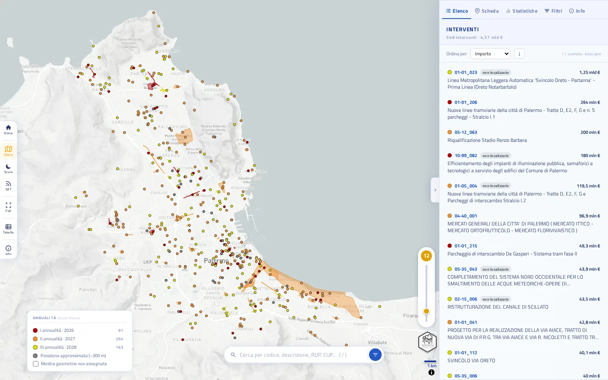
Il pannello a destra si apre e si chiude con la linguetta a forma di freccia (o con il tasto P). Tutto ciò che fai (cerchi, filtri, selezioni) aggiorna insieme mappa, elenco e statistiche.
Trascina per spostarti, usa la rotella o lo slider arancione a destra per lo zoom (la mappa non si ruota). I colori indicano l’annualità di avvio dell’affidamento: rosso I (2026), arancio II (2027), giallo III (2028). I pallini grigi hanno una posizione approssimata (circa 300 m) ricavata dal toponimo.
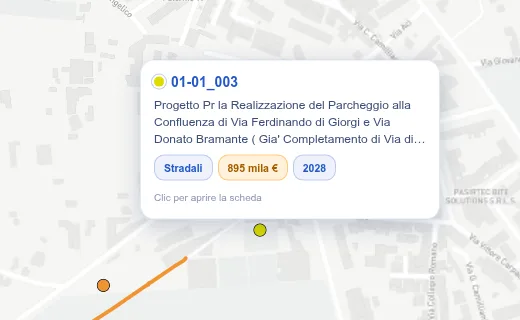
Passa il mouse su un elemento per vedere un riquadro di anteprima. Clicca per aprire la scheda completa nel pannello a destra: la mappa si centra sull’intervento.
Un intervento può avere più geometrie (un punto e una linea, per esempio): selezionandolo si evidenziano tutte.
Gli interventi senza geometria (94 su 548) non compaiono sulla mappa, ma restano in elenco, in statistiche e in tabella, con l’etichetta non localizzato.
La barra di ricerca è in basso al centro della mappa. Si attiva anche premendo /.
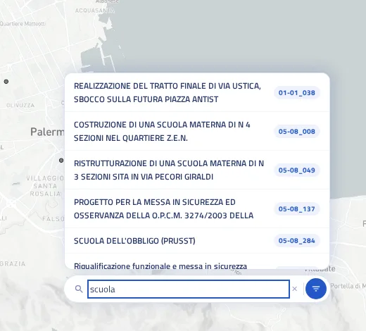
Cosa si cerca. Il testo che scrivi viene confrontato con il codice intervento (per esempio 05-08_049), la descrizione, il nome del RUP e il CUP. Maiuscole e minuscole non contano.
Come si cerca. Basta scrivere un pezzo di parola: «scuol» trova «scuola» e «scuole». Se scrivi più parole, vengono cercate insieme e di seguito («scuola materna» trova solo chi le ha scritte così, una dopo l’altra). Per restringere meglio, scrivi una parola sola e aggiungi un filtro.
Cosa succede. Appena scrivi, mappa, elenco e statistiche si limitano agli interventi trovati. Sotto la barra compaiono fino a 8 suggerimenti: scegline uno con il clic, oppure con ↑ ↓ e Invio. L’intervento scelto si apre nella scheda e la mappa ci zooma sopra.
Insieme ai filtri. La ricerca si combina con i filtri: se hai scelto la circoscrizione II, i suggerimenti riguardano solo quella circoscrizione. La ✕ nella barra cancella il testo; Esc chiude i suggerimenti.
I filtri sono nella scheda Filtri del pannello (tasto F, oppure il pulsante azzurro accanto alla ricerca). Il numero arancione sulla scheda dice quanti filtri sono attivi.
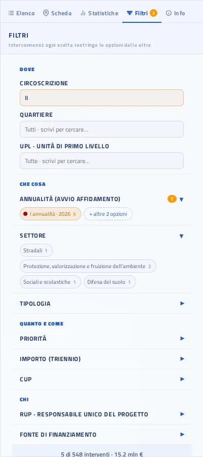
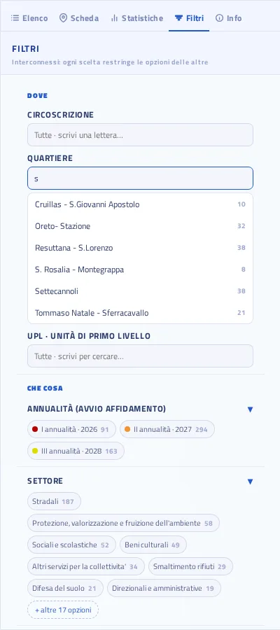
Sono tre campi a scelta singola con menu a discesa. Clicca nel campo: appare l’elenco. Puoi scorrerlo, oppure scrivere le prime lettere per restringerlo (cerca all’inizio di ogni parola: «s» non trova «IV»). Scegli con il clic o con ↑ ↓ e Invio. Per togliere la scelta, apri di nuovo il menu e clicca ✕ Tutte….
La cascata. I tre campi sono in gerarchia: Circoscrizione → Quartiere → UPL. Se scegli la circoscrizione II, nel menu dei quartieri restano solo quelli della II, e le UPL solo quelle di quei quartieri. Se scegli prima un quartiere, la circoscrizione si adegua. Una scelta non più coerente con le altre viene azzerata da sola.
UPL è l’Unità di Primo Livello, la suddivisione più fine del territorio comunale. Un intervento con più geometrie può cadere in più zone: compare in tutte.
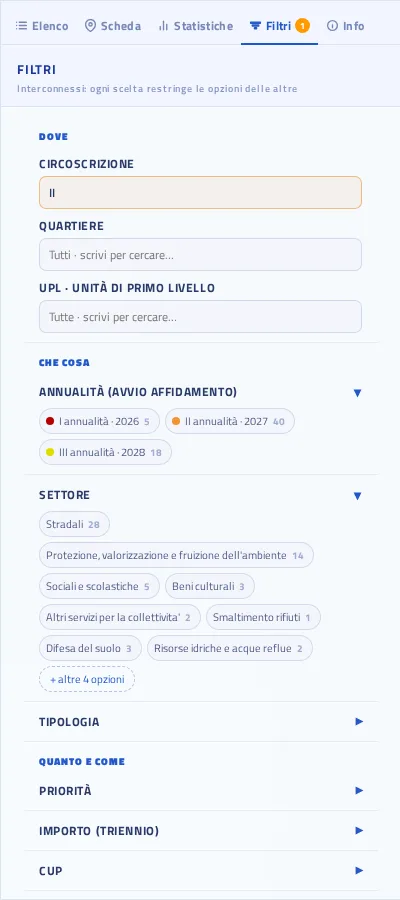
Gli altri gruppi sono sezioni che si aprono e si chiudono cliccando sul titolo; a gruppo chiuso, sotto il titolo restano visibili le scelte fatte.
I gruppi con molte opzioni ne mostrano le più numerose: «+ altre N opzioni» le apre tutte, «Mostra meno» le richiude. Per scegliere o togliere un’opzione basta un clic.
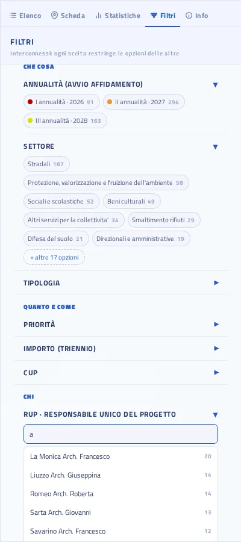
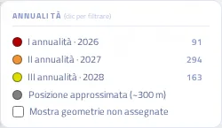
La legenda è anche un filtro rapido: clicca una annualità per mostrare solo quella (le altre diventano sbiadite), clicca di nuovo per toglierla. I numeri a destra si aggiornano con gli altri filtri. Più sotto puoi spuntare «Mostra geometrie non assegnate» per vedere anche le geometrie che non è stato possibile collegare a un intervento (utile solo senza filtri attivi). Un clic sul titolo della legenda la comprime.
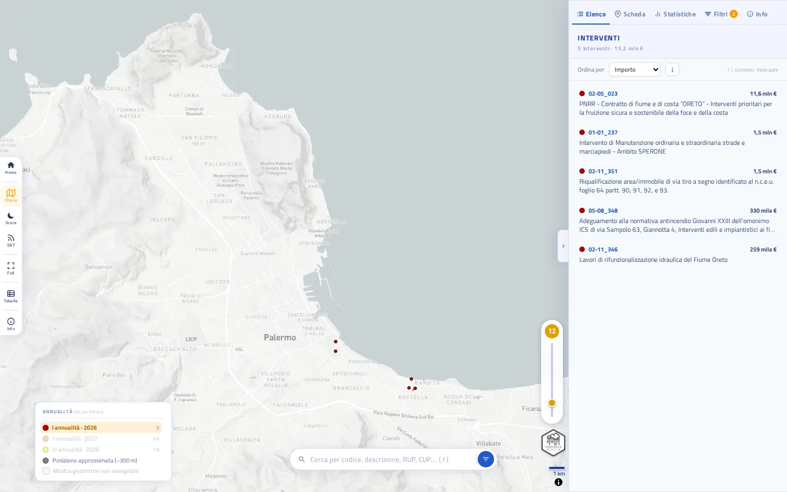
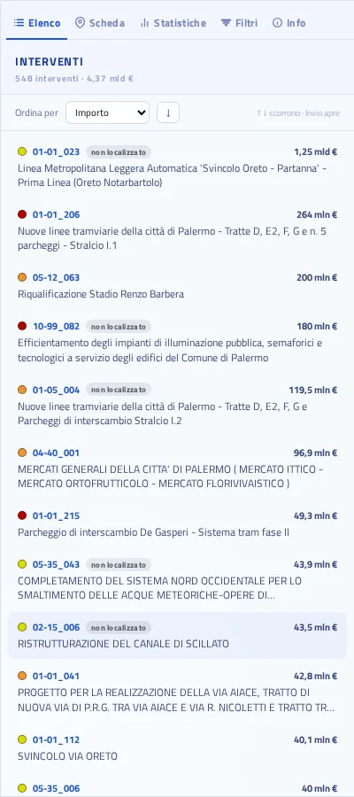
È la prima scheda del pannello e mostra gli interventi che rispettano ricerca e filtri. In alto vedi quanti sono e il loro importo totale. Ogni riga ha pallino dell’annualità, codice, importo e descrizione; non localizzato indica che non ha una posizione sulla mappa.
Ordina per importo, codice o anno di avvio; la freccia accanto inverte l’ordine (crescente o decrescente). Con ↑ ↓ scorri la lista, Invio apre la scheda. Un clic su una riga apre la scheda e porta la mappa sull’intervento.
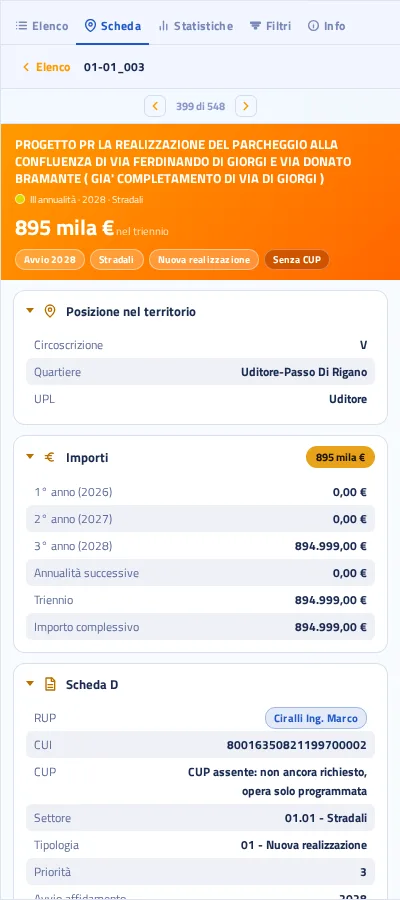
In alto: titolo, annualità, importo e le etichette principali (avvio, settore, tipologia, presenza del CUP). Sotto, il dettaglio è in sezioni ripiegabili: Posizione nel territorio (circoscrizione, quartiere, UPL), Importi anno per anno, Scheda D (RUP, CUI, CUP, settore, priorità…), e altre se i dati ci sono. Clicca il titolo di una sezione per aprirla o chiuderla; il programma ricorda cosa hai chiuso.
Le frecce ‹ › (o i tasti [ ]) passano all’intervento precedente o successivo dell’elenco. Elenco in alto a sinistra (o Esc) torna alla lista.
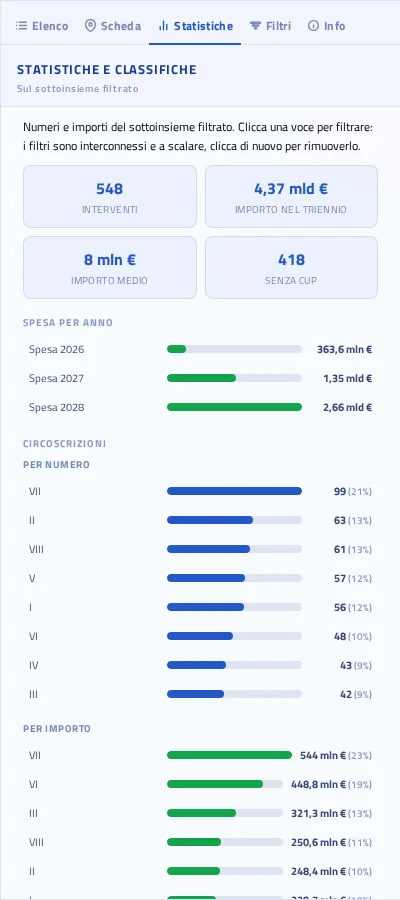
Numeri e importi del sottoinsieme filtrato: quanti interventi, importo nel triennio, importo medio, quanti senza CUP, spesa per anno. Seguono le classifiche di circoscrizioni, quartieri, settori e fonti di finanziamento, ognuna per numero e per importo.
Le classifiche sono cliccabili: un clic su una voce applica quel filtro, un secondo clic lo toglie. È il modo più veloce per esplorare: «dove si spende di più?» → clic sul quartiere → torna all’elenco.
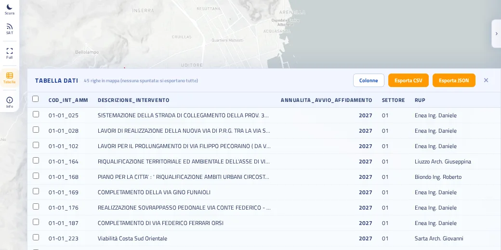
Il pulsante Tabella della barra strumenti apre un cassetto in basso con i dati degli interventi in mappa (quelli che rispettano i filtri). Con Colonne scegli quali mostrare. Spunta le caselle a sinistra per selezionare le righe: Esporta CSV o Esporta JSON scaricano le righe spuntate, o tutte se non ne hai spuntata nessuna. Un clic su una riga porta la mappa sull’intervento. La ✕ chiude il cassetto.
Ricerca, filtri e intervento selezionato sono scritti nell’indirizzo della pagina (la parte dopo il #). Copia l’indirizzo dal browser e invialo: chi lo apre vede esattamente la tua stessa selezione.
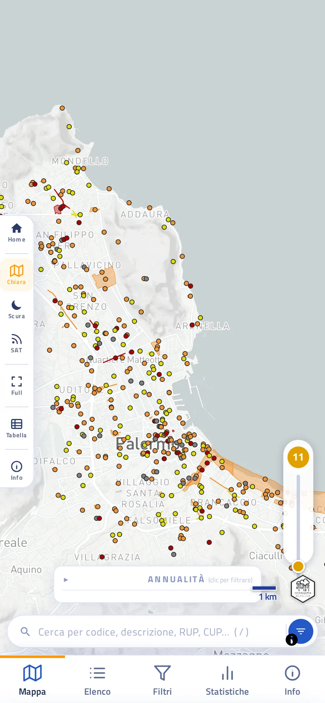
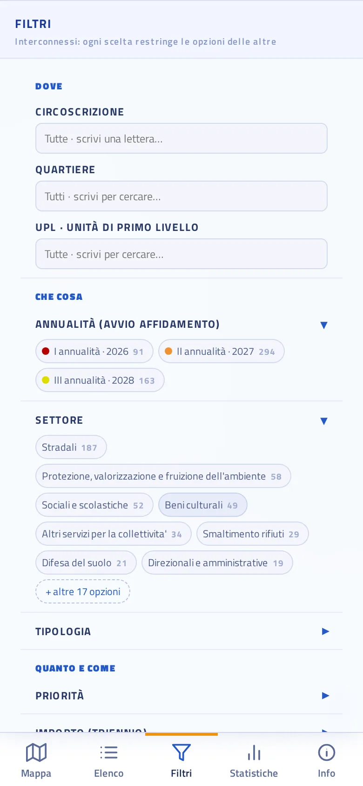
Sugli schermi stretti compare in basso una barra con Mappa · Elenco · Filtri · Statistiche · Info. Le schede occupano lo schermo; tocca Mappa per tornare alla cartina. Ricerca e filtri funzionano come su computer; un puntino sul tasto Filtri indica quanti ne hai attivi.
Programma triennale dei lavori pubblici 2026-2028, Comune di Palermo, DCC 553/2026, dal portale Demo Palermo. Rielaborazione di OpenDataSicilia.
Mappa realizzata da OpenDataSicilia.it, comunità che promuove la cultura degli open data in Sicilia, in collaborazione con Claude AI (Anthropic).
Web app progettata e sviluppata da @gbvitrano in collaborazione con Claude AI (Anthropic), che ha affiancato le scelte architetturali, l’ottimizzazione del codice e lo sviluppo delle funzionalità di visualizzazione geospaziale.
MapLibre GL JS · PMTiles · basemap © Mapbox e © OpenStreetMap contributors. Le attribuzioni complete sono nel pulsante in basso a destra della mappa.
Nota: i dati sono ricavati da Claude AI dai PDF pubblicati dal Comune e hanno carattere informativo, senza valore legale: per i dati ufficiali fa fede la documentazione originale.
Il Programma triennale dei lavori pubblici 2026-2028 del Comune di Palermo raccoglie 548 interventi per 4,37 miliardi di euro, programmati su tre annualità. La mappa colloca gli interventi sul territorio e permette di filtrarli per zona, settore, importo e stato dei codici CUP.
I colori indicano l’annualità (rosso I, arancio II, giallo III). Un intervento può avere più geometrie (punti, linee, poligoni): selezionandolo si evidenziano tutte. Le geometrie con precisione bassa, ricavate da un toponimo, sono grigie e valgono circa 300 m.
94 interventi su 548 non hanno una geometria: restano in elenco e statistiche, segnati non localizzato. In legenda si possono mostrare anche le geometrie non attribuibili a un intervento.
Delibera di Consiglio Comunale n. 553/2026, schede e allegati del Programma triennale. Tabelle estratte dai PDF e confrontate con i fogli di calcolo del Comune. Il CUP ufficiale non è stato modificato: i CUP candidati sono proposte da verificare.
Fonte dati: Piano triennale OOPP anno 2026-2028, portale Demo Palermo (Comune di Palermo).
Nota: rielaborazione di OpenDataSicilia. I dati sono ricavati da Claude AI dai PDF pubblicati dal Comune e hanno carattere informativo, senza valore legale: per i dati ufficiali fa fede la documentazione originale.